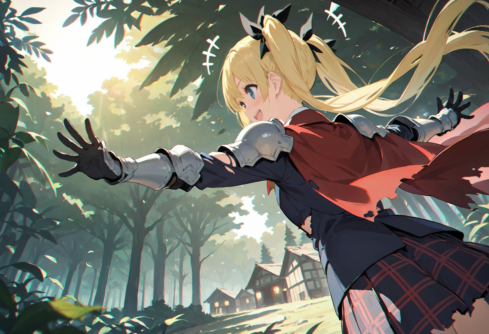
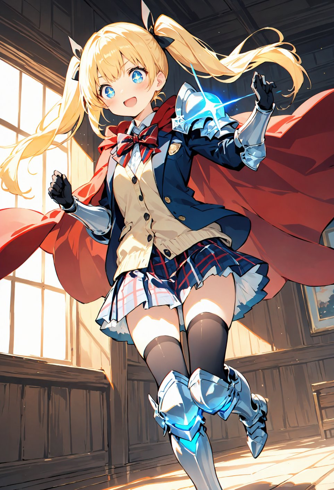
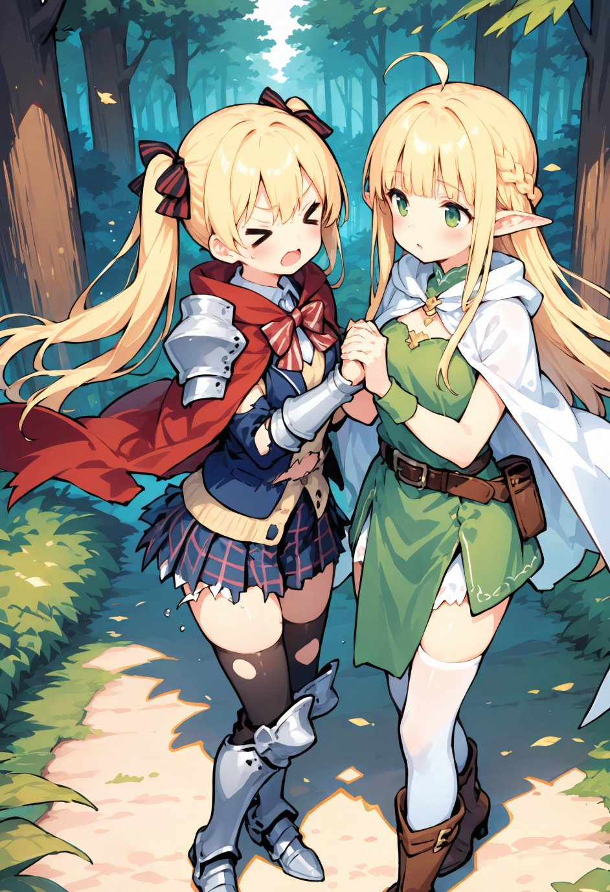

第10話
「困っているようね、旅人さん。」
驚いて顔を上げると、木漏れ日の中に一人のエルフが立っていた。 長い金髪と緑の瞳、そして柔らかい微笑みを浮かべている。
「えっ！？エルフ？」 美桜ちゃんはその美しい姿に目を見張った。エルフは軽くうなずいて、静かに自己紹介をした。 「私はリリア。この森に住むエルフよ。そして、あなたは？」 「私？私は美桜！えっと……ちょっとこの世界に迷い込んじゃって、今は冒険中！」
美桜ちゃんが元気よく答えると、リリアの視線が彼女の制服に向けられた。 「……その服、少し変わっているわね。とても珍しいわ。どこの国のものなのかしら？そのデザインも素材も、私たちの世界では見たことがない。でもずいぶん傷んでいるわね。」 リリアの言葉に美桜ちゃんは慌てて制服を押さえ、笑顔を浮かべながら説明した。 「これ、私の世界の制服なんだけど、さっきスライムにやられちゃって……。もうボロボロで恥ずかしいよ～。」

リリアはふっと小さく笑い、優しい表情で言った。 「そうだったのね。でも心配はいらないわ。この森の奥にある私たちの里があるの。そこなら魔物が近づかないから、あなたのその服を修繕することができるわ。」 「本当に！？助かる～！ありがとう、リリアちゃん！」 美桜ちゃんは満面の笑みを浮かべ、リリアと共に森の奥へと足を進めることになった。
美桜ちゃんは大きく手を広げて、目の前に広がる景色を目に焼き付けた。 「ここが……エルフの里なんだね！すごい！絵本みたい！」
木々の間に隠れるように建つ木造の家々。 透き通るような空気と森の静けさが、まるで時間が止まったかのような神秘的な雰囲気を作り出していた。
「気に入ってくれてよかったわ。」 隣を歩くリリアは、誇らしげに微笑みながら美桜ちゃんを振り返った。
「うん！すっごく素敵なところだよ！」 美桜ちゃんは勢いよく頷き、目を輝かせながら更に奥へ進む道を見つめた。 美桜ちゃんがそう口にすると、リリアは少し誇らしげに微笑んだ。 「ここは私たちエルフにとって大切な場所。でも、今は平穏が脅かされつつあるわ……」

リリアは美桜ちゃんを木造りの建物へ案内すると、自ら手を差し出した。 「さあ、制服を見せて。修繕は私がやるわ。」 「リリアちゃんが！？本当にできるの？」 「ええ、私の得意分野だから安心して。」
リリアは美桜ちゃんの制服を手に取り、慎重にほつれた部分を確認すると、さっそく魔法を使い始めた。 「これは……やっぱり見たことのない織り方ね。でも、興味深いわ。魔力を込めて修繕すれば、ただ直すだけじゃなく、もっと丈夫にすることもできるかもしれない。」
彼女が唱えると、淡い光が布地を包み込んでいく。裂け目がなめらかに修復されていき、元の形状に戻るだけでなく、輝きを帯びた美しい仕上がりになっていった。 「これでどうかしら。今の制服は、魔力を込めたことで以前よりも強度が増しているわ。普通の攻撃ではもう破れないはずよ。」 「ほんと！？すごい！！ありがとう、リリアちゃん！」 美桜ちゃんは自分の制服を眺めて感激し、その出来栄えに感心しきりだった。
修繕が終わり、一息ついたところでリリアが静かに話を切り出した。 「実は、あなたにお願いしたいことがあるの。」 リリアの表情は少し曇り、深刻な雰囲気が漂う。 「私たちエルフの里の近くの洞窟には『魔力の泉』があるの。でも最近、その泉の魔力が枯れかけていて……」

「えっ、それってかなり大変なことなんじゃ……？」 「その通り。泉の魔力が尽きれば、私たちの日々の生活はおろか、この里を守る結界も維持できなくなってしまうわ。」
さらにリリアは、過去に何人かのエルフが泉を調査しに行ったものの、誰も戻ってこなかったことを話した。 「私たちの力だけではこれ以上近づくことができないの……けれど、あなたのような強い力を持つ者がいれば、状況を変えられるかもしれない。」 リリアは美桜ちゃんを真っ直ぐに見つめた。
「私が？」美桜ちゃんは少し驚きつつも、その言葉に勇気を感じて笑顔を浮かべた。 「わかった！私に任せて！この服も強くなったし、絶対なんとかしてみせる！」
リリアは安心したように微笑み、言葉を続けた。 「私も一緒に行くわ。この泉の場所や泉の仕組みについては私たちエルフが最も詳しいから、案内役は必要でしょう？」 「ありがとう、リリアちゃん！」美桜ちゃんはその言葉に大きく頷いた。
― この話はここまで ―